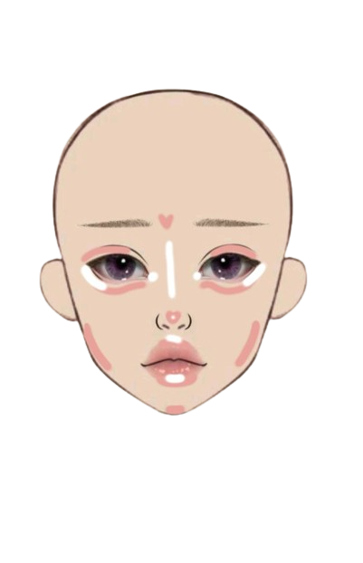

Step 1
ลงรองพื้นโทนสีเหลืองนิดๆ ตามด้วยการลงคอนซีลเลอร์สีสว่างกว่าผิว 1 ระดับ มาลงตามจุดต่างๆ
Step 2
“คอนทัวร์“ ตามโหนกแก้ม จมูก คาง และหน้าผาก
Step 3
ลงบลัชด้วยสีคอรัลหรือไฮไลต์โหนกแก้มให้ดูวิ้งค์ๆ
Step 4
ทาสีลิปสติกด้วยสีแดงเข้มก็จะยิ่งเสริมให้ผิวโทนเหลืองดูโดดเด่นขึ้นเยอะเลย
NATURAL TONE